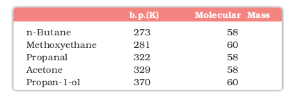
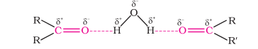
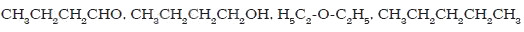

The physical properties of aldehydes and ketones are described as follows.
Methanal is a gas at room temperature. Ethanal is a volatile liquid. Other aldehydes and ketones are liquid or solid at room temperature. The boiling points of aldehydes and ketones are higher than hydrocarbons and ethers of comparable molecular masses. It is due to weak molecular association in aldehydes and ketones arising out of the dipole-dipole interactions. Also, their boiling points are lower than those of alcohols of similar molecular masses due to absence of intermolecular hydrogen bonding. The following compounds of molecular masses 58 and 60 are ranked in order of increasing boiling points.
The lower members of aldehydes and ketones such as methanal, ethanal and propanone are miscible with water in all proportions, because they form hydrogen bond with water.

However, the solubility of aldehydes and ketones decreases rapidly on increasing the length of alkyl chain. All aldehydes and ketones are fairly soluble in organic solvents like benzene, ether, methanol, chloroform, etc. The lower aldehydes have sharp pungent odours. As the size of the molecule increases, the odour becomes less pungent and more fragrant. In fact, many naturally occurring aldehydes and ketones are used in the blending of perfumes and flavouring agents.
Example 12.2
Arrange the following compounds in the increasing order of their boiling points:

Solution
The molecular masses of these compounds are in the range of 72 to 74. Since only butan-1-ol molecules are associated due to extensive intermolecular hydrogen bonding, therefore, the boiling point of butan-1-ol would be the highest. Butanal is more polar than ethoxyethane. Therefore, the intermolecular dipole-dipole attraction is stronger in the former. n-Pentane molecules have only weak van der Waals forces. Hence increasing order of boiling points of the given compounds is as follows:
CH3CH2CH2CH2CH3 < H5C2-O-C2H5 < CH3CH2CH2CHO < CH3CH2CH2CH2OH